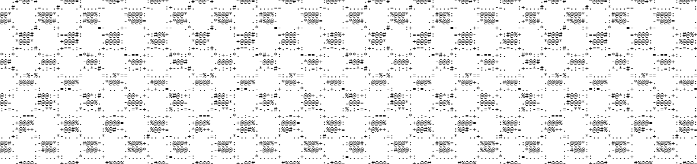

project overview/introduction
the following project is a discussion of Palestine and its representation in western media. with the current bombings and ethnic cleansing,
the Palestinian people have faced hardships beyond words. this project is an archive of Palestinian coverage from the ground in comparison
to that of western media, which downplays and does not recognize the ethnic cleansing of Palestine.
creatively, this project will include elements representative of the palestinian beauty through ASCII art. critically, this archive is a
commentary on the politicized nature of Palestine when the current state of israel has time and time again violated human rights and
international laws. [adding more capital imperialism]
#####*-:-++++++++++++++++++++++++++++++++++++++++++++++++++++-:-*#####
######=:-++++*****++++++++++++++++++++++++++++++++++*****++++-:=######
+#####+:-=++*%@@@@**++++++++***++++++++***++++++++**%@@@%+++=-:+#####+
:#####*-:-+++*%%#*+++++++*#@@@*+++**+++*@@@#*+++++++**%%*+++-:-*#####:
######+:-=+++++++****+++*%@@%*+*#@@*++*%@@%*+++*****++++++=-:=######
:#####*-:-++++*%@@@#*+++++**+++*@@@%*+++**+++++**@@@%*++++-:-*#####:
+#####*-:-+++*%@@#*++++++++++++*##*++++++++++++*#@@%*+++-:-+#####*
######+-:-++++++++*#%#++++++++++++++++++++#%#**+++++++-:-+######
.######*-:-=+++++#@@@#++***++++++++++***++*@@@#+++++=-:-*######.
.######*=::-++++*%@#+**#@@*++*##*++*@@%**+#@%+++++-::=*######.
*######+-::=+++++++*#@@@*+*%@@%*+*@@@#*+++++++=::-+######*.
-#######+-::-++++++****++*%@@%*++****++++++-::-+#######=
.*#######*-:::-=+++++++++****+++++++++=-:::-*#######*.
:#########+-::::--=++++++++++++=--::::-+#########:
:*##########+=::::::::::::::::::=+##########*:
=#############***++++++***#############=
.=################################=.
.=*######################*=.
.:-=++******++=-:.
ground covereage: reporters covering Palestine
the following are reporters who have been covering the situation in Palestine.
Bisan Owda
Bisan Owda is 25-year-old Gazan filmmaker who has devoted herself to cover what is currently happening to Palestinian people, their land, and homes.
she uses instagram to create posts and videos urging people to help and call for a ceasefire. users that may be familiar with her have been
accustomed to hearing, "hi everyone, this is Bisan. i'm still alive."
Motaz Azaiza
Motaz Azaiza is a 25-year-old Palestinian photojournalist who has been covering the current war on Gaza. his instagram account has been covering the
war and gained mass attention from media.
Belal Jadallah (1978-2023)
Belal Jadallah was a Palestinian journalist working for the Palestinian National Authority and served as the director of media and international
relations at Palestinian National Authority as well. covering the war and genocide taking place Jadallah was unfortunately killed in his vehicle
by an israeli strike in Zeitoun.
Wael Hamdan Ibrahim Al-Dahdouh
Wael Hamdan Ibrahim Al-Dahdouh also known as Abu Hamza, is a Palestinian reported who has personally faced loss during this war. his wife, seven-year
old daughter, and two of sons have been victims to israeli airstrikes and lost their lives on october 28th, 2023. Al-Daahdouh has continued to report
and ultimately evacuated to Egypt earlier this year.
